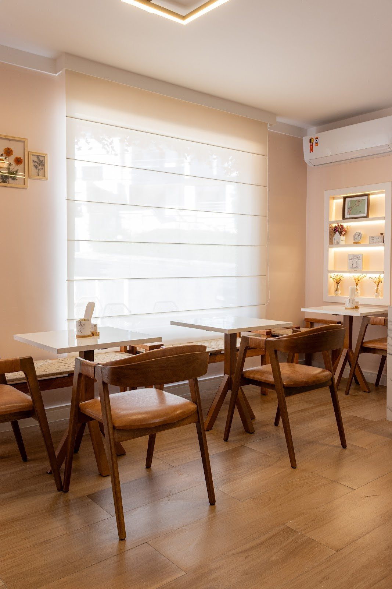

Início · Nota e imprensa
Nota no Google e na imprensa
4,8 com 229 avaliações no Google e presença nos rankings do Correio Experimenta, com a fonte de cada citação.
4,8 com 229 avaliações
229 avaliações na ficha “Le Lapin Confeitaria - Pâtisserie e Brunch”
Consulta de 03/10/2026Correio
Panetones, chocotones e ovos de Páscoa
Na reportagem sobre o chocotone, o Correio o chama de “vencedor do Correio Experimenta”: ler no Correio.
Alô Alô Bahia
A reabertura depois da reforma
Em julho de 2025, o Alô Alô Bahia mostrou a casa reformada, com “mais assentos tanto na área interna quanto externa”, e apresentou Cecília Moura como “chef e proprietária”.

Depoimentos
Avaliações com nome, na versão final
Esta prévia não reproduz trechos de avaliações. Na versão final, a casa escolhe avaliações reais do Google, com o nome de quem escreveu.
Dúvidas frequentes
Perguntas comuns
De onde vem a nota?
Da ficha da Le Lapin no Google, consultada em 03/10/2026.
O chocotone volta este ano?
As encomendas de fim de ano saem no Instagram @lelapin.ba. Confirme pelo WhatsApp.
Para levar
Escolha os doces, a casa separa para você.
Encomendas e retiradas pelo WhatsApp da Le Lapin. A casa cobra a embalagem para viagem e confirma o horário de retirada.